EC2
EC2 เป็นเครื่อง server แบบจำลองซึ่งเป็นบริการจาก Amazon มีทุกอย่างเหมือนกับเครื่องคอมพิวเตอร์ปกติ มีขั้นตอนการใช้ดังนี้

ขั้นตอนที่ 1 ให้กดเลือกที่แถบ service และ ต่อมาเลือกที่ EC2
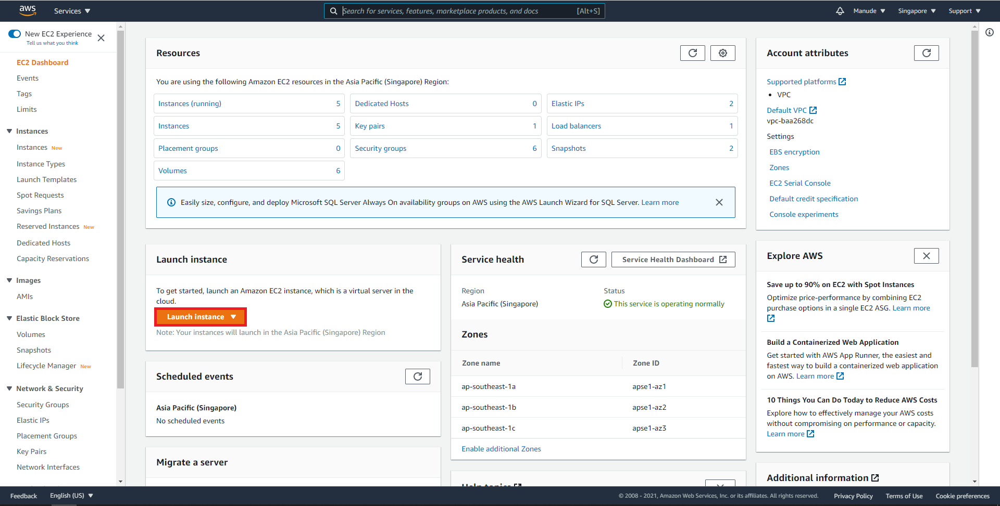ขั้นตอนที่ 2 ให้คลิ๊กที่ Launch Instance เพื่อทำการ Set up และ สร้าง Instance ขึ้นมา
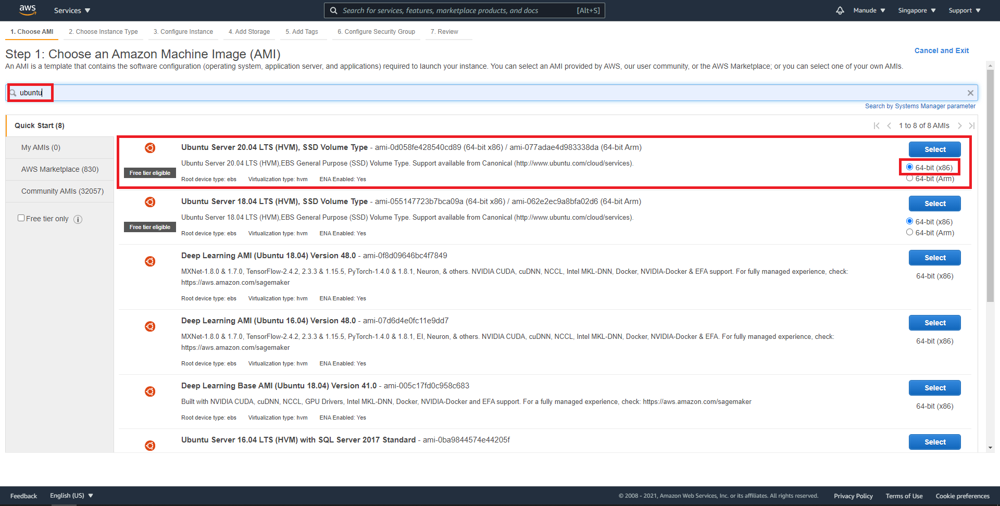ขั้นตอนที่ 3 ให้ Search คำว่า Ubuntu เพราะจะสร้าง Instance ที่เป็น Linux เลือกที่ 64-bit x86 เสร็จแล้วให้คลิ๊ก Select
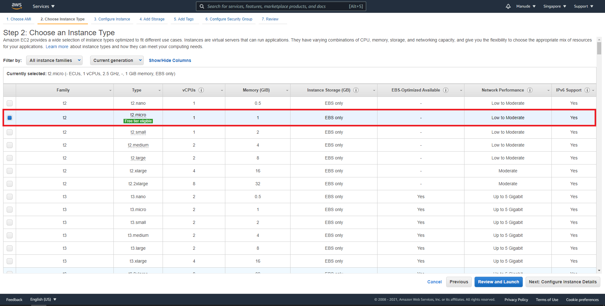ขั้นตอนที่ 4 ต่อมาให้ทำการเลือก Spec ของเครื่อง server ในที่นี้จะเลือกเป็น t2.micro เมื่อเลือกเครื่องที่ต้องการเสร็จให้คลิ๊ก next configure Instance Details

ขั้นตอนที่ 5 ในหน้านี้จะเลือก VPC เป็นแบบ default ซึ่ง VPC คือโซนของเครื่อง server ของเราเป็น cloud ย่อยเลือก และ Subnet เป็นค่า default เช่นกันต่อมาคลิ๊ก next add storage
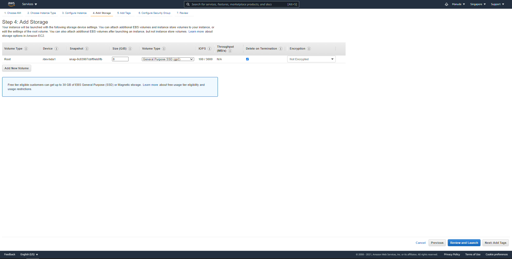ขั้นตอนที่ 6 ปรับเลือกขนาดของ storage ตามต้องการ ในที่นี้จะเลือกเป็น 8 GB ตามค่า Default เสร็จแล้วกด Next จนถึงหน้า Security group
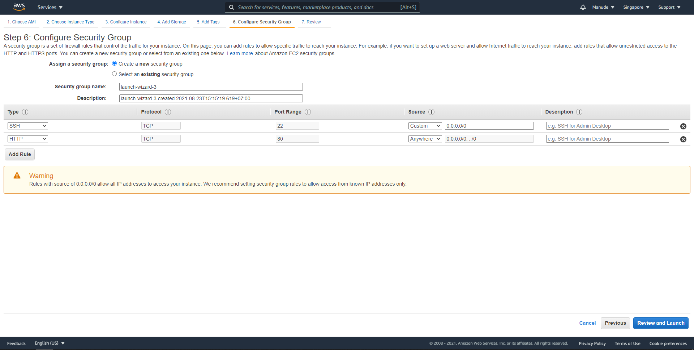ขั้นตอนที่ 7 เพิ่ม Security group ทำการ Add rule ที่เป็น Http port 80 และ SSH Source เป็น Anywhere เพื่อให้สะดวกกับการ test ที่ต้องเลือกเป็น Http เพราะจะ test ในรูปแบบของ web site เสร็จแล้ว คลิ๊กที่ review and launch
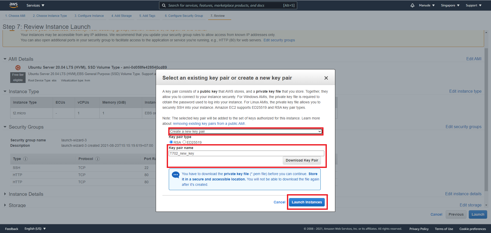ขั้นตอนที่ 8 ก่อนจะ launch ให้โหลด key pair สำหรับ connect กับเครื่อง server ที่สร้างด้วย ถ้ายังไม่มี key pair ให้กด new ขึ้นมาใหม่และ downloads เก็บเอาไว้เมื่อเสร็จแล้วให้กด launch ได้เลย หลังจากนั้นจะได้เครื่อง server ที่สร้างมาใหม่ให้ไปตั้งชื่อ tag เพื่อจะได้ไม่สับสน ดังภาพด้านล่าง
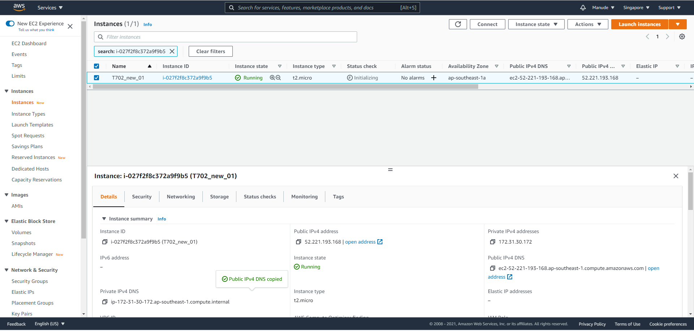เมื่อได้เครื่องจำลองแล้วต่อมาเราจะลง apache web server และ MySQL โดยวิธีดังต่อไปนี้
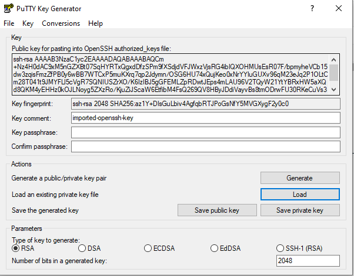ขั้นตอนที่ 1 ให้ทำการ generate private key .ppk โดยใช้ putty gen load key ที่เก็บเอาไว้แล้วคลิ๊ก save private key
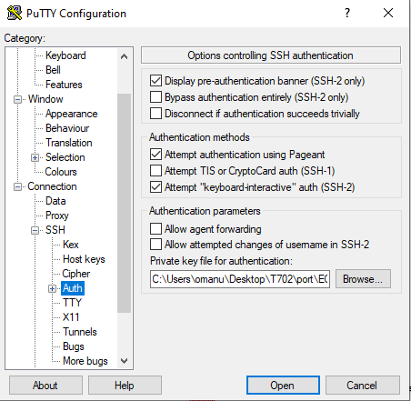ขั้นตอนที่ 2 นำkey ที่ generate มาใส่ไว้ใน SSH -> Auth
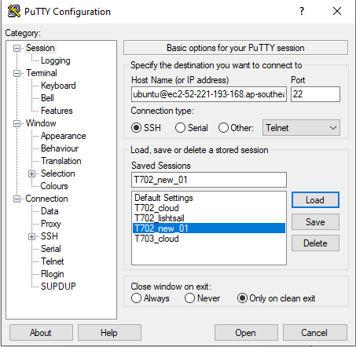ขั้นตอนที่ 3 copy IPv4 Public DNS จาก EC2 มาวางที่ Hostname IP เลือก SSH Port 22 และ ทำการ save Session ก่อนกด open เพื่อทำการเชื่อมต่อกับ server
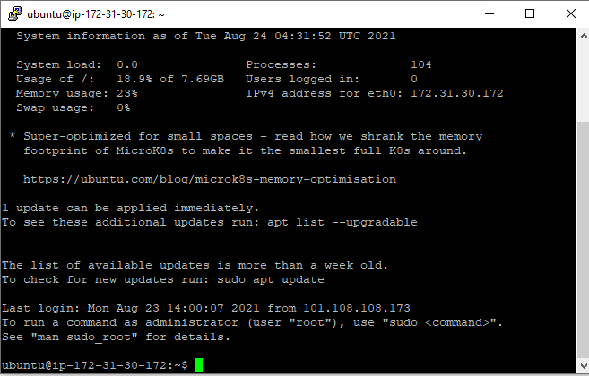ขั้นตอนที่ 4 เมื่อได้หน้า console แล้วให้ทำการ update apt-get โดยการพิมพ์ sudo apt-get update ต่อมาให้ install apache พิมพ์ sudo apt-get install apache2 เมื่อ install เสร็จให้เข้าไปตวจเช็คที่ public IPv4 จะปรากฏหน้า apache2 ขึ้นมาดังรูป
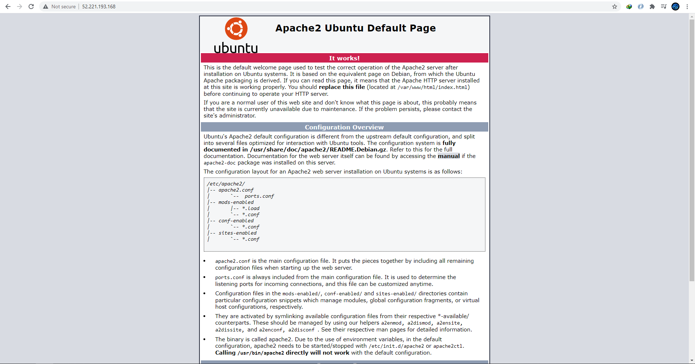ขั้นตอนที่ 5 ให้กลับไปที่ console /var/www/html เพื่อย้ายไปยัง directory ที่ว่ามาก่อน จากนั้นพิมพ์ sudo apt-get install mysql-sever และ จากนั้นพิมพ์ sudo mysql_secure_installation เพื่อเป็นการตั้ง password ใหม่ เมื่อเสร็จแล้วให้ลอง log in mysql ดู โดยพิมพ์ sudo mysql -u root -p ใส่ password ที่ตั้งไว้ก่อนหน้า ถ้า log in สำเร็จจะปรากฏ mysql ที่ด้านซ้ายดังรูป
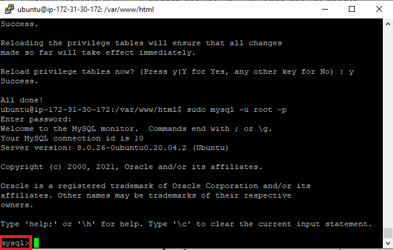ขั้นตอนที่ 6 เมื่อตรวจสอบ mysql เรียบร้อยให้พิมพ์ exit; เพื่อออกจาก mysql ต่อไปเราจะทำการลงเครื่องมือต่างๆ ของ web server ในที่นี้จะใช้เป็นภาษา php ให้พิมพ์ sudo apt-get install php libapache2-mod-php php-mysql php-curl php-gd php-json php-zip php-mbstring เมื่อ install ทุกอย่างเสร็จให้พิมพ์ sudo service apache2 restart เพื่อเป็นการ restart apache ให้พร้อมใช้งาน ต่อมาให้ทำการ install phpmyadmin โดยพิมพ์ sudo apt install phpmyadmin เลือก configuring เป็น apache2 เมื่อลงเสร็จให้ลองเข้าเปิด IPv4 public ของ EC2 ตามด้วย /phpmyadmin จะปรากฏหน้า log in จากนั้นให้ลอง log in ใส่ user เป็น phpmyadmin ใส่ password ตามที่ตั้งไว้ ถ้า login สำเร็จจะปรากฏหน้าดังรูปด้านล่าง
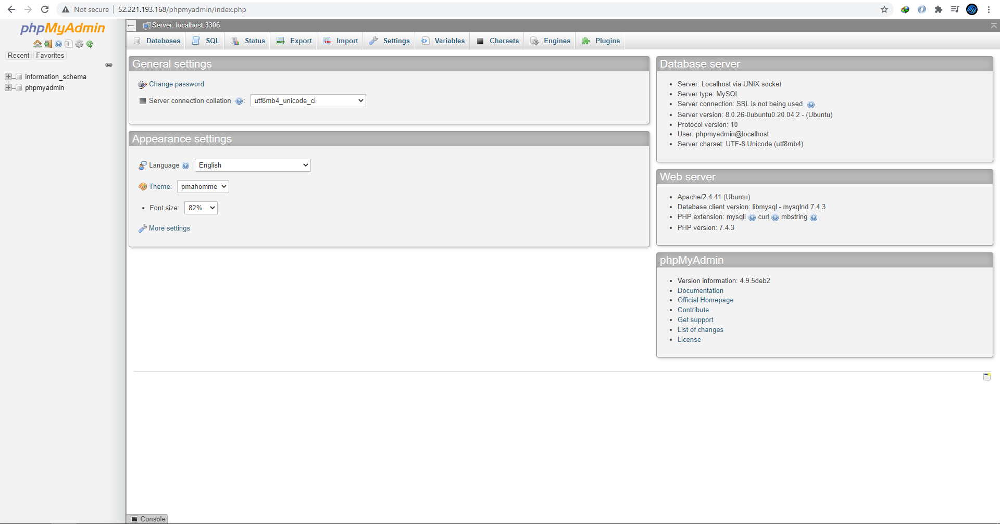ต่อมาให้ตั้ง password user: root ใหม่ โดย log in mysql ผ่าน putty ก่อนพิมพ์ sudo mysql -u root -p เมื่อเข้าสู่ mysql ให้พิมพ์ ALTER USER 'root'@'localhost' IDENTIFIED WITH mysql_native_password BY 'your_password'; จากนั้นให้พิมพ์ FLUSH PRIVILEGES; เพื่อเป็นการ refresh privileges จากนั้นพิมพ์ exit; เพื่อออกจาก msql และทดลอง log in phpmyadmin โดยใช้ user: root ดู เมื่อ log in สำเร็จให้สังเกตดู databases ด้านซ้ายจะแสดงมากกว่าการ log in ด้วย user: phpmyadmin ดังรูปด้านล่างเป็นอันเสร็จสิ้นขั้นตอนทั้งหมด